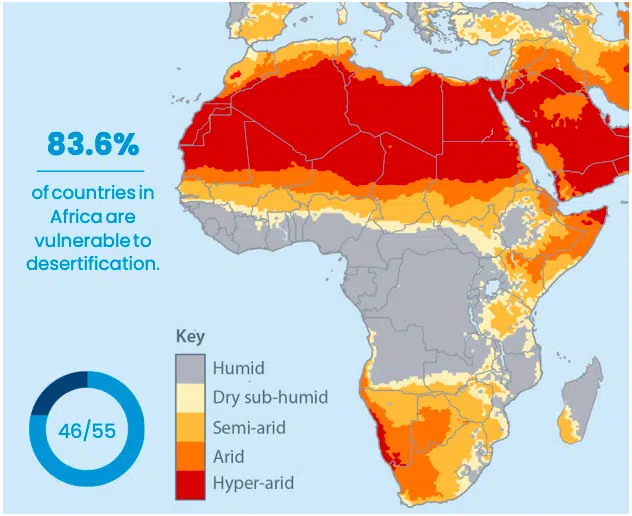
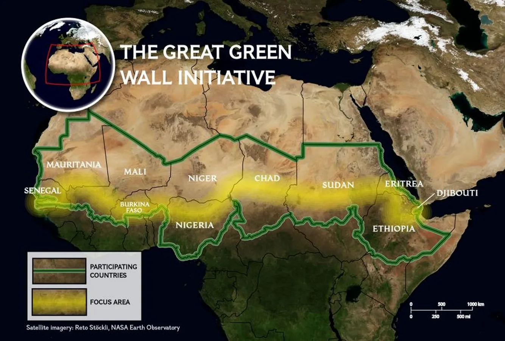

4 Policy
4.1 SUMMARY
Healthy land is central to the well being of the planet’s ecosystems and biodiversity; it feeds us, shelters us, and provides the backbone to a thriving global economy. The United Nations Convention to combat Desertification (UNCCD) was established in 1994 to protect and restore our land and ensure a safer, just, and more sustainable future.
Climate-induced desertification is having adverse effects on the African continent each year the Earth continues to warm. It impacts the everyday lives of Africans – from their crops, livestock, and housing – to African wildlife and biodiversity. (Stallwood 2022)
According to European Commission world atlas of Desertification
Degraded Land: Over 75% of Earth’s land area is already degraded, and more than 90% could face degradation by 2050.
Global Impact: Annually, an area equivalent to half the size of the European Union (about 4.18 million km²) experiences degradation, with Africa and Asia being the most affected regions.
Crop Yields: Land degradation and climate change may reduce global crop yields by 10% by 2050, particularly in India, China, and sub-Saharan Africa.
Displacement: By 2050, up to 700 million people could be displaced due to scarce land resources, potentially reaching 10 billion by the century’s end.
Local Solutions: Addressing land degradation requires local solutions and stronger cooperation at the local level to preserve biodiversity and combat this global challenge(2019?)

The importance of land degradation and desertification led to the adoption of Sustainable Development Goal 15.3 aiming at land degradation neutrality.
In 2007, an initiative called “The Green Wall” was launched for the Sahara and Sahel regions. Its ambitious goal is to create an 8,000-kilometer natural wonder spanning the entire width of Africa. By planting more trees, this project aims to combat desertification, boost food security, create jobs, and encourage migrants to return home to Africa.
By 2030, The Great Green Wall aims to restore 247 million acres of degraded land and generate 10 million jobs in affected rural areas. The AFR100 initiative’s goal of restoring 100 million hectares by 2030 is more achievable than it may seem, especially considering the recent $14 billion funding commitment for the Great Green Wall at the One Planet Summit for Biodiversity. (Stallwood 2022)

The city of my interest is Naimey, the capital city of Niger which is experiencing the issue of desertification. Since 1960, the population of Niger has increased from 1.7 million to 17 million. Mostly are farmers and herders. these people place huge pressure on the vegetation. It is estimated 50 million people globally could be displaced by desertification over the next decade.
One of the main problems what i found was to track the project because there is not a good monitoring and evaluation system in place.
4.2 APPLICATION
Desertification monitoring often uses vegetation index thresholds to assess land degradation.(Bezerra et al. 2020) Evidently, this method only considers vegetation cover and ignores soil information, leading to the lower accuracy of the classification results. (Wei et al. 2018)
To solve this ongoing issue we can come up with some better solutions like instead of just calculating NDVI we should also add NDWI and SAVI index and see the how the soil and water factors this problem. Additionally we can see how population and land is affected. As the policy is already there i think we just need people to think about this situation and involve methods which can boost up the GGW initiative. We can also identify areas where trees can be planted.

The following steps are involved in the methodology -
1. Vegetation index analysis: Analyse the loss of green, degradation of lands in Iraq over the years (using NDVI, NDWI, and other indices).
2. Drought area analysis: Use supervised machine learning algorithms to classify different land type covers.
3. Times series analysis: Analyse and predict the desertification process in the next few years through the historical data.
4. LandUse Land Cover Classification using machine learning with Google Earth Engine: Using the cloud power provided by Google Earth Engine to train a land cover classifier.
5. Dashboard: Build a dashboard to visualize the areas affected and our future predictions. (zotero-315?)
4.3 REFLECTION
The big learning point for me this week was to learn about so many different policies and yet we see the issues and problem still remains. It has also highlighted how remote sensing data can be used to address multiple factors in a city for a common goal.
The application of remote sensing assists policymakers in creating informed maps for desertification decisions. While valuable, it’s not a magic solution. Consider stakeholders, potential repercussions, and ongoing monitoring. Challenges exist, including data complexity. Collaboration is key to maximizing its impact in policy.